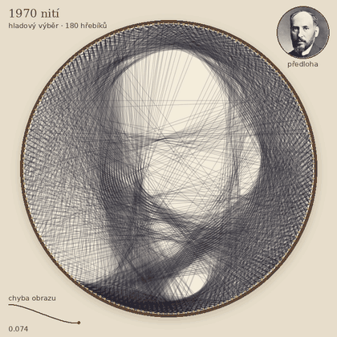

Bonusová úloha za 2 body · body jsou navíc nad 30 bodů
projektu · každý tým smí získat nejvýš 2 bonusy · data: data-B04.zip
Santiago Ramón y Cajal kreslil neurony tuší, čáru po čáře. Vy ho
nakreslíte nití. String art je kruhový rám s hřebíky po obvodu,
mezi kterými se napíná tenká černá nit. Každý úsek nitě je rovná tětiva,
a když se jich přes sebe položí dost, z dálky se z nich složí obličej.
Které tětivy vybrat? Je to celočíselná úloha výběru – a jak ji vyřešíte,
je na vás.
Co potřebujete vědět
Plátno \(160 \times 160\) px, 180
hřebíků rovnoměrně na kruhu o poloměru 79 px, tětivy mezi hřebíky
vzdálenými po obvodu aspoň 10 pozic (14 490 možností), použít smíte
nejvýš \(K = 2000\) nití.
Tětiva \(j\) zakryje pixel \(i\) podílem \(a_{ij} \le \alpha = 0.06\) (podle délky,
kterou v pixelu urazí). Nitě se skládají jako filtry, ne sčítáním:
tmavost pixelu je \(t_i = 1 - \prod_j (1 -
a_{ij})^{w_j}\), kde \(w_j \in \{0,
1\}\) říká, zda je tětiva použita.
Účelová funkce: oba obrazy (render i cíl) rozmažte
Gaussem se \(\sigma = 1\) px (pohled z
dálky) a spočtěte střední absolutní rozdíl tmavosti uvnitř kruhu. Menší
je lepší.

Kam se dá dojít
Ukázka z pilotního řešení (hladový výběr, 1970 nití) – co zhruba
jde, ne laťka, kterou musíte překonat.
Co dostanete
cil-cajal.png, cil-hopper.png,
cil-neuron.png – cílové obrázky (tmavost \(d_i = 1 - g/255\), mimo kruh bílá), původ v
README.txt;
parametry.json – všechna čísla z modelu výše;
ukaz_start.py – nakreslí cíl s hřebíky, vyrenderuje
2000 náhodných nití a vypíše jejich chybu (u Cajala kolem 0,21; prázdné
plátno 0,45). Ukazuje jednoduchou rasterizaci tětivy, model skládání i
účelovou funkci, takže je odkud začít. Optimalizace v něm není.
S čím si pohrát
Kam dojde hladový výběr „přidej tětivu, která nejvíc pomůže“, a kdy
se sám zastaví? Dá se ho zrychlit, aby nepřepočítával všechno?
Výběr tětiv je celočíselný program. Co udělá jeho LP relaxace a
zaokrouhlení? Kolik \(w_j\) vyjde
zlomkových?
Je rozumné brát tmavost jako součet příspěvků nití? Dá se úloha
přepsat tak, aby saturaci respektovala a zůstala konvexní?
Pomůže lokální zlepšování – vyměnit jednu nit za jinou?
Opravdový string art je jedna souvislá nit: co se změní, když každá
tětiva musí začínat tam, kde skončila předchozí?
Jak kvalitu ovlivní počet hřebíků, tloušťka nitě, barevné nitě nebo
bílá nit na černém podkladu?
Proč skoro nejde utkat Cajalovu kresbu neuronu, zatímco fotografie
obličeje jde? Zkuste i vlastní obrázek.
Nápověda. LP přes všech 20 tisíc pixelů má miliony
nenulových prvků. Fitovat se dá na zmenšeném obrázku (průměry bloků
pixelů), což zároveň odpovídá pohledu z dálky.
Za body
Do složky bonus-B04/ vašeho repozitáře, spustitelné
jedním příkazem:
vlastní optimalizace, která počáteční stav z
ukaz_start.py viditelně zlepší;
animace průběhu (GIF, první snímek = výsledek);
krátký README: co jste zkusili, co fungovalo a co ne, jeden graf
průběhu optimalizace a srovnání s počátečním stavem nebo s náhodným
hledáním.